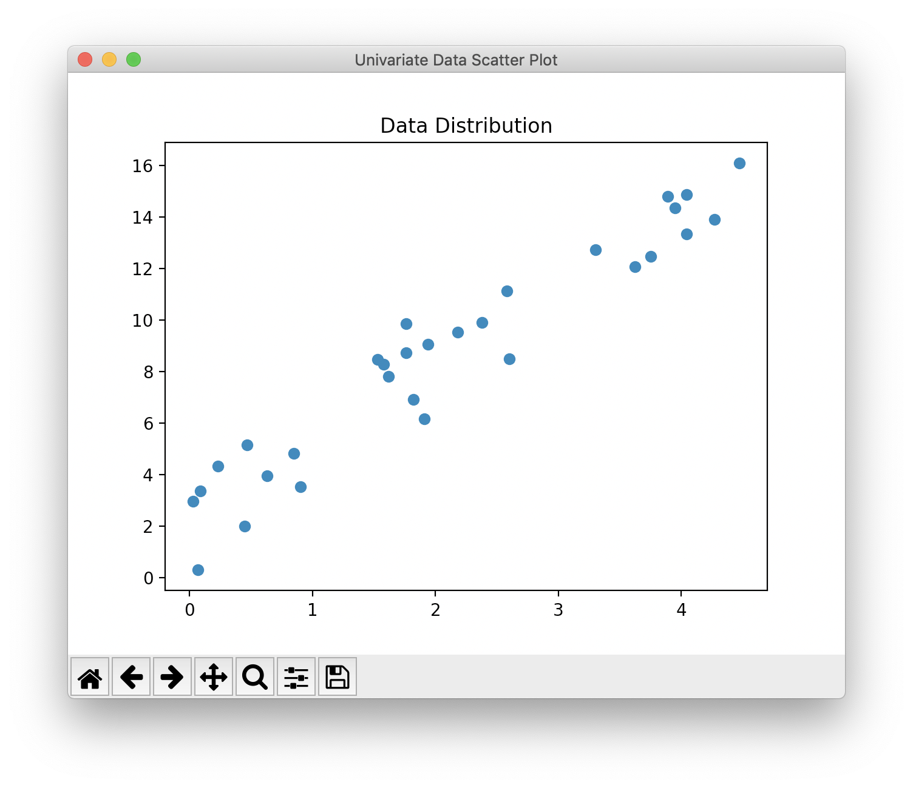
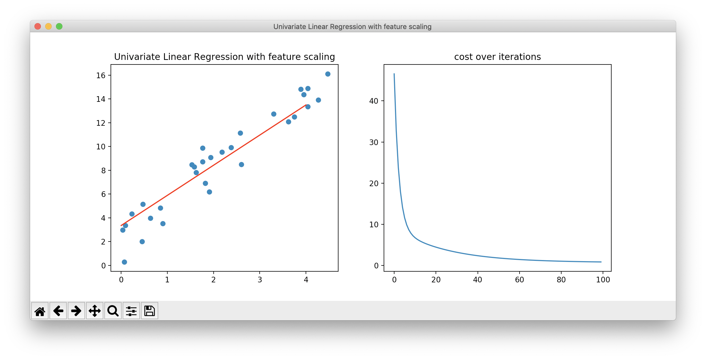
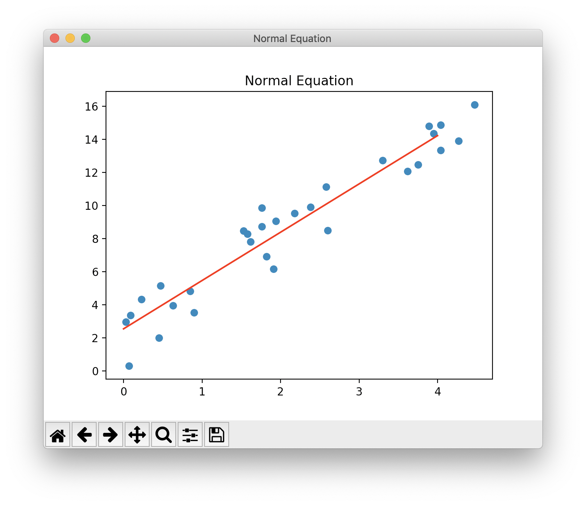
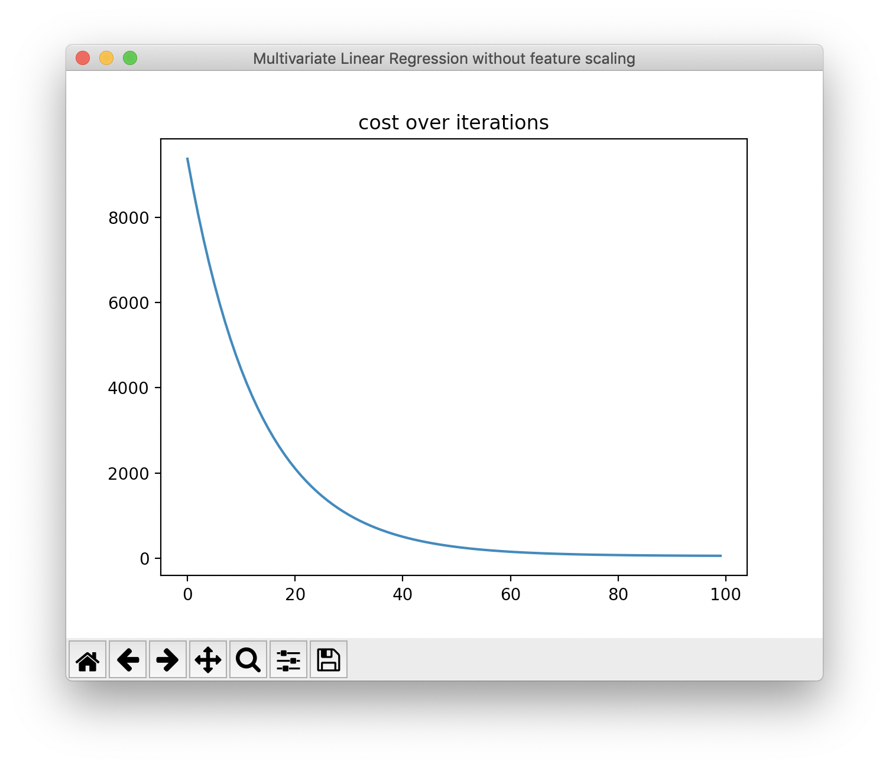
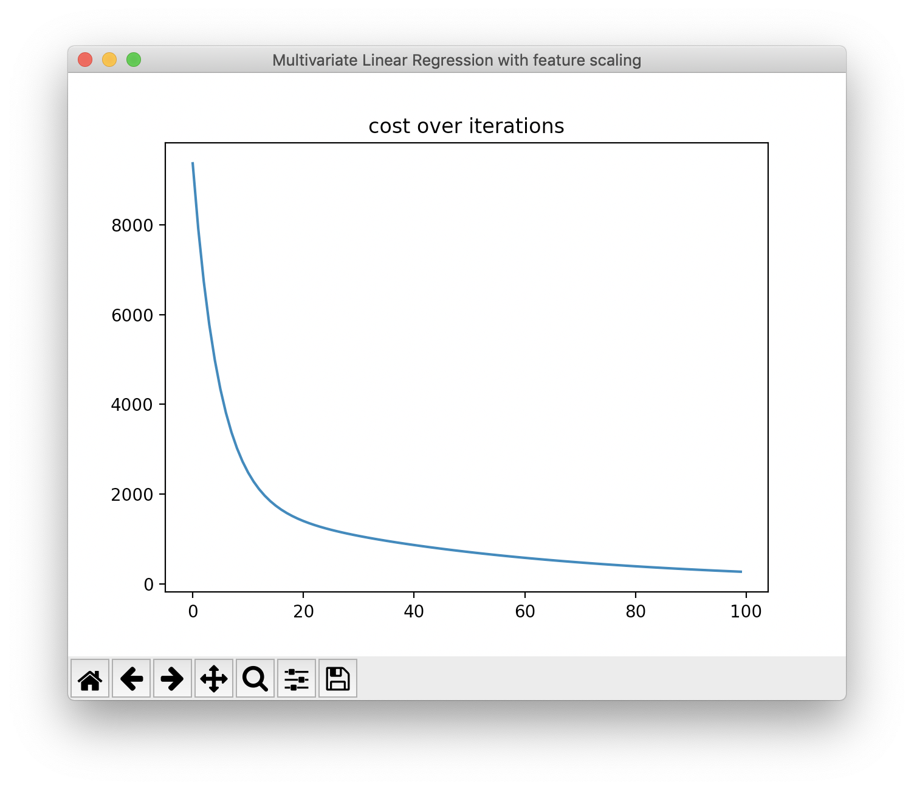

<!DOCTYPE html>
<html lang="en">

<!-- Head tag -->
<head>

    <!-- hexo-inject:begin --><!-- hexo-inject:end --><meta charset="utf-8">
    <meta http-equiv="X-UA-Compatible" content="IE=edge">
    <meta name="viewport" content="width=device-width, initial-scale=1">
    <meta name="google-site-verification" content="Mxm9E-j9Gv7WuZQYUJ6BytlCEOcioYX-OQuCqPdBp6I" />

    <!--Description-->
    
        <meta name="description" content="Linear Regression 簡介
假設我們有 \(m\) 筆資料，每筆資料都包含 \(n\) 個特徵，記為 \(x\)，每筆資料都有 1 個正確答案，記為 \(y\)。若給我們一筆新的資料，我們希望預測這筆資料的正確答案。
\(x\) 與 \(y\) 之間可能存在著某種關聯性 \(f\)，使得 \(y=f(x)\)，但我們不知道這個 \(f\) 是什麼，因此我們希望利用這些現存的資料找出一個 \(h(x)\)，使得 \(h\) 越接近 \(f\) 越好。">
    

    <!--Author-->
    
        <meta name="author" content="Qoo">
    

    <!--Open Graph Title-->
    
        <meta property="og:title" content="機器學習經典演算法實作 - Linear Regression"/>
    

    <!--Open Graph Description-->
    

    <!--Open Graph Site Name-->
    <meta property="og:site_name" content="Qoo&#39;s Blog"/>

    <!--Type page-->
    
        <meta property="og:type" content="article" />
    

    <!--Page Cover-->
    

        <meta name="twitter:card" content="summary" />
    

    <!-- Title -->
    
    <title>機器學習經典演算法實作 - Linear Regression - Qoo&#39;s Blog</title>

    <!-- Bootstrap Core CSS -->
    <link href="//maxcdn.bootstrapcdn.com/bootstrap/3.3.6/css/bootstrap.min.css" rel="stylesheet"/>

    <!-- Custom CSS -->
    <link rel="stylesheet" href="/css/style.css">

    <!-- Custom Fonts -->
    <link href="//maxcdn.bootstrapcdn.com/font-awesome/4.6.3/css/font-awesome.min.css" rel="stylesheet" type="text/css">
    <link href="//fonts.googleapis.com/css?family=Lora:400,700,400italic,700italic" rel="stylesheet" type="text/css">
    <link href="//fonts.googleapis.com/css?family=Open+Sans:300italic,400italic,600italic,700italic,800italic,400,300,600,700,800" rel="stylesheet" type="text/css">

    <!-- HTML5 Shim and Respond.js IE8 support of HTML5 elements and media queries -->
    <!-- WARNING: Respond.js doesn't work if you view the page via file:// -->
    <!--[if lt IE 9]>
    <script src="//oss.maxcdn.com/libs/html5shiv/3.7.0/html5shiv.js"></script>
    <script src="//oss.maxcdn.com/libs/respond.js/1.4.2/respond.min.js"></script>
    <![endif]-->

    <!-- Gallery -->
    <link href="//cdnjs.cloudflare.com/ajax/libs/featherlight/1.3.5/featherlight.min.css" type="text/css" rel="stylesheet" />

    <!-- Google Analytics -->
    


    <!-- favicon -->
    
    <link rel="icon" href="/img/favicon.ico"/><!-- hexo-inject:begin --><!-- hexo-inject:end -->
    
	
</head>


<body>

    <!-- hexo-inject:begin --><!-- hexo-inject:end --><!-- Menu -->
    <!-- Navigation -->
<nav class="navbar navbar-default navbar-custom navbar-fixed-top">
    <div class="container-fluid">
        <!-- Brand and toggle get grouped for better mobile display -->
        <div class="navbar-header page-scroll">
            <button type="button" class="navbar-toggle" data-toggle="collapse" data-target="#bs-example-navbar-collapse-1">
                <span class="sr-only">Toggle navigation</span>
                <span class="icon-bar"></span>
                <span class="icon-bar"></span>
                <span class="icon-bar"></span>
            </button>
            <a class="navbar-brand" href="/">Qoo's Blog</a>
        </div>

        <!-- Collect the nav links, forms, and other content for toggling -->
        <div class="collapse navbar-collapse" id="bs-example-navbar-collapse-1">
            <ul class="nav navbar-nav navbar-right">
                
                    <li>
                        <a href="/">
                            
                                Home
                            
                        </a>
                    </li>
                
                    <li>
                        <a href="/archives">
                            
                                Archives
                            
                        </a>
                    </li>
                
                    <li>
                        <a href="/tags">
                            
                                Tags
                            
                        </a>
                    </li>
                
                    <li>
                        <a href="/categories">
                            
                                Categories
                            
                        </a>
                    </li>
                
                    <li>
                        <a href="https://github.com/p61402" target="_blank" rel="noopener">
                            
                                <i class="fa fa-github fa-stack-2x"></i>
                            
                        </a>
                    </li>
                
            </ul>
        </div>
        <!-- /.navbar-collapse -->
    </div>
    <!-- /.container -->
</nav>

    <!-- Main Content -->
    <!-- Page Header -->
<!-- Set your background image for this header in your post front-matter: cover -->

<header class="intro-header" style="background-image: url('/img/banner.jpg')">
    <div class="container">
        <div class="row">
            <div class="col-lg-8 col-lg-offset-2 col-md-10 col-md-offset-1">
                <div class="post-heading">
                    <h1>機器學習經典演算法實作 - Linear Regression</h1>
                    
                    <span class="meta">
                        <!-- Date and Author -->
                        
                        
                            2019-06-12
                        
                    </span>
                </div>
            </div>
        </div>
    </div>
</header>

<!-- Post Content -->
<article>
    <div class="container">
        <div class="row">

            <!-- Tags and categories -->
           
                <div class="col-lg-4 col-lg-offset-2 col-md-5 col-md-offset-1 post-tags">
                    
                        


<a href="/tags/Python/">#Python</a> <a href="/tags/Machine-Learning/">#Machine Learning</a>


                    
                </div>
                <div class="col-lg-4 col-md-5 post-categories">
                    
                        

<a href="/categories/機器學習/">機器學習</a>

                    
                </div>
            

            <!-- Gallery -->
            

            <!-- Post Main Content -->
            <div class="col-lg-8 col-lg-offset-2 col-md-10 col-md-offset-1">
                <h1 id="linear-regression-簡介">Linear Regression 簡介</h1>
<p>假設我們有 <span class="math inline">\(m\)</span> 筆資料，每筆資料都包含 <span class="math inline">\(n\)</span> 個特徵，記為 <span class="math inline">\(x\)</span>，每筆資料都有 1 個正確答案，記為 <span class="math inline">\(y\)</span>。若給我們一筆新的資料，我們希望預測這筆資料的正確答案。</p>
<p><span class="math inline">\(x\)</span> 與 <span class="math inline">\(y\)</span> 之間可能存在著某種關聯性 <span class="math inline">\(f\)</span>，使得 <span class="math inline">\(y=f(x)\)</span>，但我們不知道這個 <span class="math inline">\(f\)</span> 是什麼，因此我們希望利用這些現存的資料找出一個 <span class="math inline">\(h(x)\)</span>，使得 <span class="math inline">\(h\)</span> 越接近 <span class="math inline">\(f\)</span> 越好。</p>
<a id="more"></a>
<h2 id="model-representation">Model Representation</h2>
<p>Linear Regression (線性迴歸) 就是找出一條直線，使得這條線能夠盡可能的擬合所有的訓練資料。</p>
<p><span class="math display">\[h_\theta(x)=\theta_0+\theta_1 x_1+\theta_2 x_2+...+\theta_n x_n\]</span></p>
<p><span class="math inline">\(\theta\)</span> 是這條直線的係數，也是我們要想辦法計算出來的，這個模型的參數。</p>
<p>那麼假設我們找到了一組參數，我們要如何保證在給定這組參數的情況下，模型能夠準確地用來表示這些資料呢？</p>
<h2 id="cost-function">Cost Function</h2>
<p>我們希望資料透過這個模型的計算得出來的結果，與實際的值誤差越小越好，因此我們可以採用 Mean Square Error (MSE) 來計算誤差。</p>
<p>而這個誤差我們稱為 cost function (代價函數)，有些人稱作 loss function (損失函數) 或 objective function (目標函數)，其實指的都是同個意思。</p>
<p>下方的式子就是我們使用的 cost function：</p>
<p><span class="math display">\[J(\theta)=\frac{1}{2m}\sum_{i=1}^m(h_\theta(x^{(i)})-y^{(i)})^2\]</span></p>
<p>這裡有一點需要注意的是，我們多除了一個 <span class="math inline">\(2\)</span>，這是因為待會的步驟要計算這個 cost function 的微分，微分時平方項會變成 <span class="math inline">\(\times2\)</span>，剛好可以與多除的 <span class="math inline">\(2\)</span> 抵銷掉，因此能夠減少計算量。</p>
<h2 id="gradient-descent">Gradient Descent</h2>
<p>既然我們有了一個 cost function 能夠衡量一組參數的好壞，那我們剩下要做的事情就是想辦法找到一組最好的參數使得 cost function 最小。</p>
<p>我們當然可以用暴力法一一嘗試各種參數的組合，但是這個有點方法不切實際，因為我們不知道參數的範圍在哪裡，同時這個方法的效率也相當差。</p>
<p>我們可以用 Gradient Descent 來逐步更新參數：</p>
<p><span class="math display">\[\theta_j:=\theta_j-\alpha\frac{\partial}{\partial \theta_j}J(\theta)\]</span></p>
<p><span class="math inline">\(\dfrac{\partial}{\partial \theta_j}J(\theta)\)</span> 是 cost function 對參數 <span class="math inline">\(\theta_j\)</span> 的偏微分，代表這一點的梯度方向，而由於梯度方向是指向高點，而我們要尋找的是 cost function 的最小值，所以我們會在這一項前面加上一個負號。</p>
<p>我們將這個梯度乘上一個 learning rate <span class="math inline">\(\alpha\)</span>，這個值通常小於 1，因為我們希望每次參數更新的幅度不要太大，才能夠緩慢的收斂至極值，不過若 learning rate 過小也容易導致收斂在 local optimal。</p>
<p>而 gradient 的計算如下：</p>
<p><span class="math display">\[\dfrac{\partial}{\partial \theta_j}J(\theta)=\dfrac{1}{m}\sum_{i=1}^m(h_\theta(x^{(i)})-y^{(i)})x_j^{(i)}\]</span></p>
<h2 id="feature-scaling">Feature Scaling</h2>
<p>若不同 feature 的範圍差距過大，在 gradient descent 的時候收斂的速度會較慢，這時我們可以將 feature 進行正規化，例如將特徵規範在 -1 到 1 之間。</p>
<p>而正規化的方法有很多種，這裡我們使用的是 Mean Normalization：</p>
<p><span class="math display">\[x_i=\dfrac{x_i-\mu_i}{s_i}\]</span></p>
<p>其中 <span class="math inline">\(s_i=x_{max}-x_{min}\)</span>，結果會使得 <span class="math inline">\(-1\leq x_i\leq1\)</span>，並且 mean = 0。</p>
<h2 id="normal-equation">Normal Equation</h2>
<p>除了用 gradient descent 之外，也可以使用 Normal Equation，這個方法能夠直接得出最佳的 <span class="math inline">\(\theta\)</span> 值，這邊我們僅列出式子，不探討其背後的原理。</p>
<p><span class="math display">\[\theta=(X^TX)^{-1}X^Ty\]</span></p>
<h1 id="實作">實作</h1>
<p>載入我們唯一需要用到的函式庫：<code>numpy</code>。</p>
<figure class="highlight python"><table><tr><td class="gutter"><pre><span class="line">1</span><br></pre></td><td class="code"><pre><span class="line"><span class="keyword">import</span> numpy <span class="keyword">as</span> np</span><br></pre></td></tr></table></figure>
<p>定義一個類別及所需的變數：</p>
<figure class="highlight python"><table><tr><td class="gutter"><pre><span class="line">1</span><br><span class="line">2</span><br><span class="line">3</span><br><span class="line">4</span><br><span class="line">5</span><br><span class="line">6</span><br><span class="line">7</span><br><span class="line">8</span><br><span class="line">9</span><br></pre></td><td class="code"><pre><span class="line"><span class="class"><span class="keyword">class</span> <span class="title">LinearRegression</span><span class="params">()</span>:</span></span><br><span class="line">    <span class="function"><span class="keyword">def</span> <span class="title">__init__</span><span class="params">(self, num_iteration=<span class="number">100</span>, learning_rate=<span class="number">1e-1</span>, feature_scaling=True)</span>:</span></span><br><span class="line">        self.num_iteration = num_iteration</span><br><span class="line">        self.learning_rate = learning_rate</span><br><span class="line">        self.feature_scaling = feature_scaling</span><br><span class="line">        self.M = <span class="number">0</span> <span class="comment"># normalize mean</span></span><br><span class="line">        self.S = <span class="number">1</span> <span class="comment"># normalize range</span></span><br><span class="line">        self.W = <span class="literal">None</span></span><br><span class="line">        self.cost_history = np.empty(num_iteration)</span><br></pre></td></tr></table></figure>
<p>Gradient Descent 的方法：</p>
<p>為了加快運算的速度以及方便表示資料，我們會把資料向量化，也就是全部的資料都以<code>numpy</code>的矩陣表示。</p>
<p>因為 feature 的數量為 <span class="math inline">\(n\)</span> 個，因此參數的數量會是 <span class="math inline">\(n + 1\)</span> 個：</p>
<p><span class="math display">\[\theta=\begin{bmatrix}
\theta_0 \\
\theta_1 \\
\vdots \\
\theta_n
\end{bmatrix}_{(n+1)\times 1}
\]</span></p>
<p>但輸入資料為一個 <span class="math inline">\(m\times n\)</span> 的矩陣：</p>
<p><span class="math display">\[X=\begin{bmatrix}
x_1^{(1)} &amp; x_2^{(1)} &amp; \dots &amp; x_n^{(1)} \\
x_1^{(2)} &amp; x_2^{(2)} &amp; \dots &amp; x_n^{(2)} \\
\vdots &amp; \vdots &amp; \vdots &amp; \vdots \\
x_1^{(m)} &amp; x_2^{(m)} &amp; \dots &amp; x_n^{(m)}
\end{bmatrix}_{m\times n}
\]</span></p>
<p>因此需要新增一行全部都為 <span class="math inline">\(1\)</span> 的 feature 與 <span class="math inline">\(\theta_0\)</span> 做計算：</p>
<p><span class="math display">\[X=\begin{bmatrix}
1 &amp; x_1^{(1)} &amp; x_2^{(1)} &amp; \dots &amp; x_n^{(1)} \\
1 &amp; x_1^{(2)} &amp; x_2^{(2)} &amp; \dots &amp; x_n^{(2)} \\
\vdots &amp; \vdots &amp; \vdots &amp; \vdots &amp; \vdots \\
1 &amp; x_1^{(m)} &amp; x_2^{(m)} &amp; \dots &amp; x_n^{(m)}
\end{bmatrix}_{m\times (n+1)}
\]</span></p>
<figure class="highlight python"><table><tr><td class="gutter"><pre><span class="line">1</span><br><span class="line">2</span><br><span class="line">3</span><br><span class="line">4</span><br><span class="line">5</span><br><span class="line">6</span><br><span class="line">7</span><br><span class="line">8</span><br><span class="line">9</span><br><span class="line">10</span><br><span class="line">11</span><br><span class="line">12</span><br><span class="line">13</span><br><span class="line">14</span><br><span class="line">15</span><br><span class="line">16</span><br><span class="line">17</span><br><span class="line">18</span><br><span class="line">19</span><br><span class="line">20</span><br><span class="line">21</span><br><span class="line">22</span><br><span class="line">23</span><br></pre></td><td class="code"><pre><span class="line"><span class="function"><span class="keyword">def</span> <span class="title">fit</span><span class="params">(self, X, y)</span>:</span></span><br><span class="line">    <span class="comment"># m 為資料筆數，n 為特徵數量</span></span><br><span class="line">    <span class="keyword">if</span> X.ndim == <span class="number">1</span>:</span><br><span class="line">        X = X.reshape(X.shape[<span class="number">0</span>], <span class="number">1</span>)</span><br><span class="line">    m, n = X.shape</span><br><span class="line"></span><br><span class="line">    <span class="comment"># 是否進行正規化</span></span><br><span class="line">    <span class="keyword">if</span> self.feature_scaling:</span><br><span class="line">        X = self.normalize(X)</span><br><span class="line"></span><br><span class="line">    <span class="comment"># 在 X 左方加入一行 1 對應到參數 theta 0</span></span><br><span class="line">    X = np.hstack((np.ones((m, <span class="number">1</span>)), X))</span><br><span class="line"></span><br><span class="line">    y = y.reshape(y.shape[<span class="number">0</span>], <span class="number">1</span>)</span><br><span class="line"></span><br><span class="line">    self.W = np.zeros((n+<span class="number">1</span>,<span class="number">1</span>))</span><br><span class="line"></span><br><span class="line">    <span class="comment"># 每個 iteration 逐步更新參數</span></span><br><span class="line">    <span class="keyword">for</span> i <span class="keyword">in</span> range(self.num_iteration):</span><br><span class="line">        y_hat = X.dot(self.W)</span><br><span class="line">        cost = self.cost_function(y_hat, y, m)</span><br><span class="line">        self.cost_history[i] = cost</span><br><span class="line">        self.gradient_descent(X, y_hat, y, m)</span><br></pre></td></tr></table></figure>
<p>實作<code>fit</code>函式用到的方法：</p>
<figure class="highlight python"><table><tr><td class="gutter"><pre><span class="line">1</span><br><span class="line">2</span><br><span class="line">3</span><br><span class="line">4</span><br><span class="line">5</span><br><span class="line">6</span><br><span class="line">7</span><br><span class="line">8</span><br><span class="line">9</span><br><span class="line">10</span><br><span class="line">11</span><br><span class="line">12</span><br><span class="line">13</span><br></pre></td><td class="code"><pre><span class="line"><span class="function"><span class="keyword">def</span> <span class="title">normalize</span><span class="params">(self, X)</span>:</span></span><br><span class="line">    self.M = np.mean(X, axis=<span class="number">0</span>)</span><br><span class="line">    self.S = np.max(X, axis=<span class="number">0</span>) - np.min(X, axis=<span class="number">0</span>)</span><br><span class="line">    <span class="keyword">return</span> (X - self.M) / self.S</span><br><span class="line"></span><br><span class="line"><span class="function"><span class="keyword">def</span> <span class="title">cost_function</span><span class="params">(self, y_hat, y, m)</span>:</span></span><br><span class="line">    <span class="keyword">return</span> <span class="number">1</span>/(<span class="number">2</span>*m) * np.sum((y_hat - y)**<span class="number">2</span>)</span><br><span class="line"></span><br><span class="line"><span class="function"><span class="keyword">def</span> <span class="title">compute_gradient</span><span class="params">(self, X, y_hat, y, m)</span>:</span></span><br><span class="line">    <span class="keyword">return</span> <span class="number">1</span>/m * np.sum((y_hat - y) * X, axis=<span class="number">0</span>).reshape(<span class="number">-1</span>,<span class="number">1</span>)</span><br><span class="line"></span><br><span class="line"><span class="function"><span class="keyword">def</span> <span class="title">gradient_descent</span><span class="params">(self, X, y_hat, y, m)</span>:</span></span><br><span class="line">    self.W -= self.learning_rate * self.compute_gradient(X, y_hat, y, m)</span><br></pre></td></tr></table></figure>
<p>預測：</p>
<figure class="highlight python"><table><tr><td class="gutter"><pre><span class="line">1</span><br><span class="line">2</span><br><span class="line">3</span><br><span class="line">4</span><br><span class="line">5</span><br><span class="line">6</span><br><span class="line">7</span><br><span class="line">8</span><br><span class="line">9</span><br><span class="line">10</span><br><span class="line">11</span><br><span class="line">12</span><br></pre></td><td class="code"><pre><span class="line"><span class="function"><span class="keyword">def</span> <span class="title">predict</span><span class="params">(self, X)</span>:</span></span><br><span class="line">    <span class="keyword">if</span> X.ndim == <span class="number">1</span>:</span><br><span class="line">        X = X.reshape(X.shape[<span class="number">0</span>], <span class="number">1</span>)</span><br><span class="line">    m, n = X.shape</span><br><span class="line"></span><br><span class="line">    <span class="keyword">if</span> self.normalize:</span><br><span class="line">        X = (X - self.M) / self.S</span><br><span class="line"></span><br><span class="line">    X = np.hstack((np.ones((m, <span class="number">1</span>)), X))</span><br><span class="line"></span><br><span class="line">    y_hat = X.dot(self.W)</span><br><span class="line">    <span class="keyword">return</span> y_hat</span><br></pre></td></tr></table></figure>
<p>Normal Equation 的方法：</p>
<figure class="highlight python"><table><tr><td class="gutter"><pre><span class="line">1</span><br><span class="line">2</span><br><span class="line">3</span><br><span class="line">4</span><br><span class="line">5</span><br><span class="line">6</span><br><span class="line">7</span><br><span class="line">8</span><br><span class="line">9</span><br><span class="line">10</span><br></pre></td><td class="code"><pre><span class="line"><span class="function"><span class="keyword">def</span> <span class="title">normal_equation</span><span class="params">(self, X, y)</span>:</span></span><br><span class="line">    <span class="keyword">if</span> X.ndim == <span class="number">1</span>:</span><br><span class="line">        X = X.reshape(X.shape[<span class="number">0</span>], <span class="number">1</span>)</span><br><span class="line">    m, n = X.shape</span><br><span class="line"></span><br><span class="line">    X = np.hstack((np.ones((m, <span class="number">1</span>)), X))</span><br><span class="line"></span><br><span class="line">    y = y.reshape(y.shape[<span class="number">0</span>], <span class="number">1</span>)</span><br><span class="line"></span><br><span class="line">    self.W = np.linalg.inv(X.T.dot(X)).dot(X.T).dot(y)</span><br></pre></td></tr></table></figure>
<h1 id="實驗">實驗</h1>
<p>隨機產生 30 筆單一特徵的資料：</p>
<figure>
<figcaption>Data Distribution</figcaption>
</figure>
<p>不使用 feature scaling</p>
<p></p>
<p>使用 feature scaling</p>
<p></p>
<p>其實可以發現在 univariate 的 feature 上，不論使用 feature scaling 與否，都不會對結果影響太大。</p>
<p>使用 Normal Equation：</p>
<p></p>
<p>隨機產生 100 筆三個特徵的資料，前三個 column 為 feature，最後一個 column 為 label，y 的值透過三個特徵經過某些運算後加上一些隨機值得到： <figure class="highlight plain"><table><tr><td class="gutter"><pre><span class="line">1</span><br><span class="line">2</span><br><span class="line">3</span><br><span class="line">4</span><br><span class="line">5</span><br><span class="line">6</span><br></pre></td><td class="code"><pre><span class="line">54.31 3.92 -2.06 130.03</span><br><span class="line">34.79 3.63 -2.49 91.56</span><br><span class="line">87.91 2.99 -2.97 197.75</span><br><span class="line">15.88 3.4 -2.22 52.14</span><br><span class="line">96.59 2.83 -1.81 209.64</span><br><span class="line">...</span><br></pre></td></tr></table></figure></p>
<p>不進行 feature scaling，則 learning rate 必須設定小一點，否則容易造成梯度爆炸。即便沒有梯度爆炸，也通常需要更多的 iteration 才會收斂。</p>
<p>下圖使用的 learning rate = 1e-5。</p>
<p></p>
<p>若有進行 feature scaling，則 learning rate 可以設定大一點，收斂速度會相對較快。</p>
<p>下圖使用的 learning rate = 0.1。</p>
<p></p>


                
            </div>

            <!-- Comments -->
            
                <div class="col-lg-8 col-lg-offset-2 col-md-10 col-md-offset-1">
                    


                </div>
            
        </div>
    </div>
</article>

    <!-- Footer -->
    <script async src="//busuanzi.ibruce.info/busuanzi/2.3/busuanzi.pure.mini.js">
</script>

<hr />
<!-- Footer -->
<footer>
    <div class="container">
        <div class="row">
            <div class="col-lg-8 col-lg-offset-2 col-md-10 col-md-offset-1">
                <ul class="list-inline text-center">
                    

                    

                    

                    

                    

                    
                    <span id="busuanzi_container_site_uv">
                    <i class="fa fa-user"> 訪客數: </i><span id="busuanzi_value_site_uv"></span>
                    </span>
                    <span id="busuanzi_container_page_pv">
                    <i class="fa fa-eye"> 閱讀次數: </i><span id="busuanzi_value_page_pv"></span>
                    </span>
                </ul>
                <p class="copyright text-muted">&copy; 2019 Qoo<br></p>
                <p class="copyright text-muted">Original Theme <a target="_blank" href="http://startbootstrap.com/template-overviews/clean-blog/">Clean Blog</a> from <a href="http://startbootstrap.com/" target="_blank">Start Bootstrap</a></p>
                <p class="copyright text-muted">Adapted for <a target="_blank" href="https://hexo.io/">Hexo</a> by <a href="http://www.codeblocq.com/" target="_blank">Jonathan Klughertz</a></p>
            </div>
        </div>
    </div>
</footer>


    <!-- After footer scripts -->
    
<!-- jQuery -->
<script src="//code.jquery.com/jquery-2.1.4.min.js"></script>

<!-- Bootstrap -->
<script src="//maxcdn.bootstrapcdn.com/bootstrap/3.3.6/js/bootstrap.min.js"></script>

<!-- Gallery -->
<script src="//cdnjs.cloudflare.com/ajax/libs/featherlight/1.3.5/featherlight.min.js" type="text/javascript" charset="utf-8"></script>

<!-- Disqus Comments -->


<script type="text/x-mathjax-config">
    MathJax.Hub.Config({
        tex2jax: {
            inlineMath: [ ["$","$"], ["\\(","\\)"] ],
            skipTags: ['script', 'noscript', 'style', 'textarea', 'pre', 'code'],
            processEscapes: true
        }
    });
    MathJax.Hub.Queue(function() {
        var all = MathJax.Hub.getAllJax();
        for (var i = 0; i < all.length; ++i)
            all[i].SourceElement().parentNode.className += ' has-jax';
    });
</script>
<script src="http://cdn.mathjax.org/mathjax/latest/MathJax.js?config=TeX-AMS-MML_HTMLorMML"></script><!-- hexo-inject:begin --><!-- hexo-inject:end -->
</body>

</html>